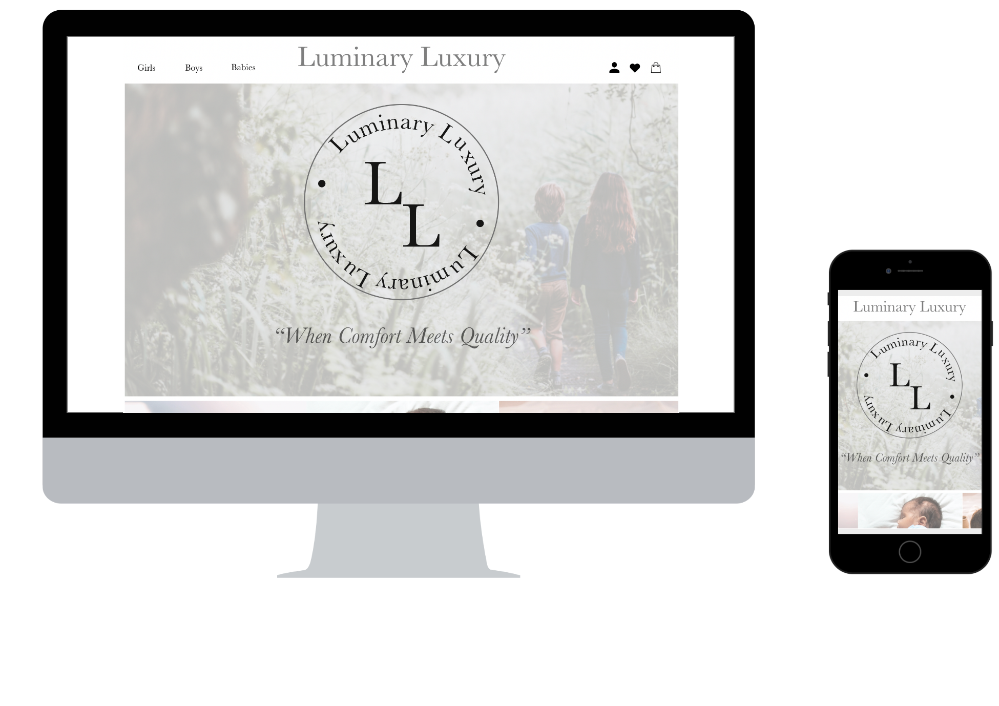

Tema - 03 Grundlæggende UX
03.02.06 Prototype 2 & 03.03.03 Pitch
Om Prototypen
I opgave 03.02.06 Prototype 2 var målet at lave en prototype i XD, for en online T-shirt forretning. Jeg blev i dette tema introduceret til teknologier til produktion af digitalt indhold, indsamling af empiriske data, metoder og teorier om brugerforståelse i digital indholdsproduktion. Derudover også copy-og micro-copywriting og USP, i sammenhæng med UI-elementer, der har stor betydning for hvordan brugeren oplever produktet digitalt. Jeg lærte om desk research og surveys, til at indsamle kvantitative data, til indsigt og analyse af brugerens handlemåder. Jeg lærte om interview metoder og om Five-act interview og Sprint, som er en metode man kan teste sin prototype af på. I min opgave startede jeg med desk research for e-handel og T-shirt markedet generelt. Jeg lavede en survey, om e-handel og T-shirts, som jeg sendte ud til min målgruppe, der primært var forældre med små børn. Jeg analyserede min survey og lavede grundkonceptet for mit brand, lavede min USP, copywrting og micro-copy. Jeg lavede mine forskellige versioner af prototypen og testede den på medstuderende. Alt dette lærte mig vigtigheden af at lave desk research, surveys og interviews, så du ved hvilken målgruppe du skal ramme og hvad den målgruppe egentligt kan lide. Udviklingsprocessen for prototypen kan ses her under.
Processen med Prototypen
Om Pitchen
I opgave 03.03.03 Pitch, var målet at lave en picth, ud fra den prototype jeg havde lavet om en børnetøjs-forretning, der solgte T-shirts og leggings. I pitch delen af vores UX-forløb, blev jeg introduceret til udviklingsprocessen for digital indholdsproduktion, hvor vi lærte at dokumentere designprocesser og pitche vores løsning. Min Pitch bestod af mine forskellige processer, så som min UX og Desk Research, mine svar fra survey, interview og test. Mine UI-design valg, skitser, moodboard, styletile og til sidst den endelige prototype. Det at skulle pitche sin prototype og arbejdet bag Pitchen, lærte mig vigtigheden ved at være grundig i både sin research fase, men især også i sin analyse del af dine indsigter, da du skal kunne formidle det du er kommet frem til og de valg du har taget, til andre. I dette tilfælde mine medstuderende og lærer, så de forstår dine forskellige valg indenfor design og indhold, på baggrund af mine resultater.